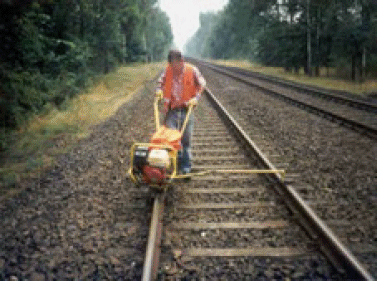
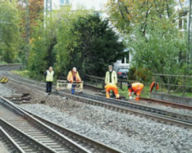

6. Arbeiten im nicht gesperrten Arbeitsgleis
Wegen der hohen Gefährdung müssen Arbeiten im nicht gesperrten Gleis auf zwingend
erforderliche Ausnahmefälle beschränkt werden. Es wird empfohlen, Arbeiten
mit mehr als 5 sec Räumzeit nur im gesperrten Gleis ausführen zu lassen. Beim
Einsatz großer handtragbarer Maschinen (z. B. Schraubmaschinen, Abb. 6-1) sollte
das Arbeitsgleis gesperrt sein. Bei der DB muss das Gleis für den Einsatz von Maschinen
und Geräten gesperrt werden [29] und Arbeiten im nicht gesperrten Gleis
unter Postensicherung sind nur für „kleine“ Arbeitsstellen und „kurze“ Postenketten
zugelassen, vgl. Kap. 2.5. Auch für die Messarbeiten an einer Weiche wurde das
Gleis gesperrt, Abb. 6-2.
Wenn im nicht gesperrten Gleis gearbeitet werden muss, ist die richtige Angabe der
Räumzeit durch den Bauunternehmer entscheidend für die Sicherungsplanung, wie
folgendes Beispiel zeigt (Geschwindigkeit 160 km/h, an der Arbeitsstelle 120 km/h):
- Räumzeitangabe 5 sec: mit dem Sicherheitszuschlag von 15 sec ergibt sich eine Sicherheitsfrist von 20 sec und daraus eine Annäherungsstrecke von 860 m.
- Tatsächliche Räumzeit 15 sec: mit dem Sicherheitszuschlag von 15 sec ergibt sich eine Sicherheitsfrist von 30 sec und daraus eine Annäherungsstrecke von 1300 m.
Wird die Räumzeit also um 10 sec zu niedrig angegeben, erhält man im Ergebnis
eine um 440 m zu kurze Annäherungsstrecke. Bei Einsatz eines automatischen
Warnsystems wäre der Schienenkontakt um 440 m zu dicht vor der Arbeitsstelle
montiert.
Um das Arbeitsgleis nach einer Warnung zeitgerecht räumen zu können, müssen
folgende Bedingungen eingehalten werden:
- Bei Arbeiten im nicht gesperrten Gleis darf es sich nur um Arbeiten sehr geringen
Umfangs (z. B. Messung, Besichtigung, Weichenschmierung) mit leichtem Gerät
handeln, die für die Räumung jederzeit unterbrochen werden können. Arbeiten,
bei denen Maschinen am Gleis befestigt werden (z. B. nicht profilfreie Bohrmaschinen)
oder in den Oberbau eingreifen (z. B. Handstopfmaschinen) oder bei
denen kraftbetriebene Maschinen eingesetzt werden, dürfen nur im gesperrten
Gleis ausgeführt werden, vgl. Anhang 8. Die im Sicherungsplan vorgesehene
Räumzeit muss jederzeit einhaltbar sein. Die Anzahl der Beschäftigten an den Arbeitsmitteln
muss immer so groß sein, dass eine Räumung jederzeit möglich ist.
- Der Sicherheitsraum muss auch bei wandernden Arbeitsstellen stets innerhalb
der Räumzeit erreichbar sein, auch wenn er sich nicht direkt neben der Arbeitsstelle
befindet (z. B. bei Arbeiten auf Brücken) und er muss ausreichend Platz für
das Ablegen der Arbeitsmittel bieten. Der dafür notwendige vom Bahnbetreiber
festgelegte Abstand der Arbeitsmittel zum Gleis muss bekannt sein (für DB vgl.
Anhang 3).
- Die Wahrnehmbarkeitsprobe wurde unter Verwendung der für die Arbeiten erforderlichen
persönlichen Schutzausrüstung erfolgreich durchgeführt.
- Bei „wandernden“ Arbeitsstellen muss darauf geachtet werden, dass akustische
Warnsignale z. B. von Sicherungsposten mit handtragbaren elektrischen Signalgebern
(Abb. 2-15) sicher wahrnehmbar sind, d. h. die Warnsignalgeber müssen mit
der Arbeitsstelle „mitwandern“.
- Auch für das Nachbargleis müssen Sicherungsmaßnahmen durchgeführt sein,
ebenso für die Zuwegung, wenn dabei Betriebsgleise überquert werden müssen.
Wenn für die Warnung im nicht gesperrten Arbeitsgleis automatische Warnsysteme
eingesetzt werden (z. B. Signalgeber mit bidirektionalem Funk, Abb. 2-15) muss ein
Innenposten das Verhalten der Beschäftigten nach der Warnung überwachen und
ggf. das Warnsignal Ro 2 wiederholen oder das Signal Ro 3 geben [14], [15]. Die Arbeitsstelle
darf nur so groß sein, dass sie von einem Innenposten überwacht werden
kann. Das Warnsystem ist grundsätzlich mit Schienenkontakt auszulösen.

| Abb. 6-1: |
Bei Arbeiten mit Maschinen,
z. B. Schraubmaschinen,
muss das
Arbeitsgleis gesperrt
sein. Warnwesten sind
geschlossen zu tragen. |

| Abb. 6-2: |
Messarbeiten an einer
Weiche (Arbeitsgleis
gesperrt), Warnwesten
sind geschlossen zu
tragen.
|